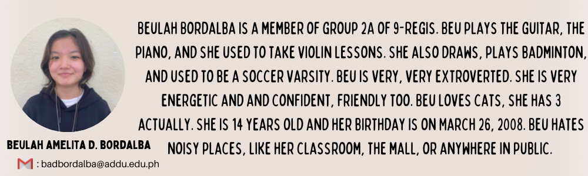
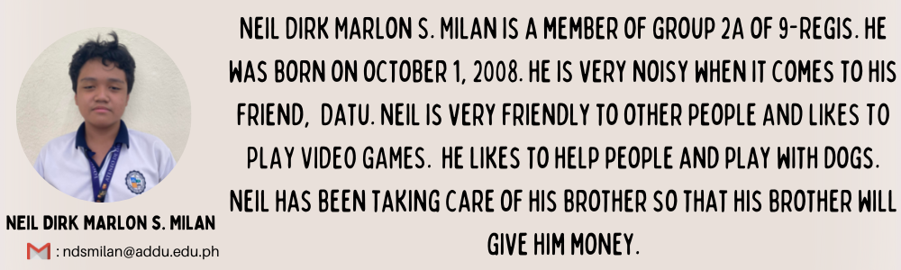

HOME PAGE
Overview
Group 2A from Grade 9 St. John Francis Regis will advocate on behalf of our partner institution, SMAC (The Sorelle Missionarie dell'Amore di Cristo Inc.) as well as present our proposed solution. Our website will have the following pages: The homepage, the background and significance, the feature video (MAPEH), and our scientific investigation project about composting (SIP). These pages will be helpful for our partner institution because they can raise awareness of it among other people and get more sponsors/donors.
SMAC Profile
Sorelle Missionarie Dell 'Amore Di Cristo, also known as SMAC or SMAC Sisters, is a non-profit, non-stock children's institution that concentrates on the immediate medical and health care requirements of abandoned, neglected, and orphaned children. There are a lot of children who have been abandoned or treated poorly and are now surviving exclusively on the streets,which is why this organization was created. The children will benefit from this organization's assistance as they grow into mature spiritual beings who uphold Christian values, share their faith with others, and live their lives to the fullest.
History
SMAC is a congregation founded in Italy. The institution's founder is Sister Luz Pepito. On January 17, 1998, SMAC Sisters took over the CARITAS and started serving the Toril Parish in Davao City. They noticed the poor living conditions of parishioners and families that are unable to treat sick members; the presence of out-of-school children due to financial inability, resulting in the majority of them wandering the streets; extremely poor living conditions that cause malnutrition, lack of hygiene, and low morale; extreme poverty; and elements that contribute to violence. SMAC gathered those kids and gave them a place to live as a result of these discoveries.
Mission and Vision
SMAC's mission is to seek out the neglected, orphaned, and abandoned children in the streets, give them the opportunity to better their lives through education, restore their human dignity by providing them with a home where they can experience love and care, and provide spiritual and value-based formation to support and strengthen their overall development as people. The institution's vision is to create children who are mentally and socially mature and who are able to live full and meaningful lives.
Benefactors
The Ateneo de Davao University Junior High School Community and their friends are the benefactors of SMAC. The community has received assistance from the Addu JHS as they run programs and activities to offer the residents of SMAC. Additionally, SMAC has friends that helps them with their needs, such as getting discounts on children's dental care. They work together to nurtu re these children and make sure the institution is maintained so that the children can grow up to be great individuals.
General Information
Address:
Purok 6 Habana Compound 8022 Tugbok Davao City
Contact Person/s:
Luz Pepito
Contact Number/s:
09432466811; 082 - 2930949;
How to get there:
From Davao Bukidnon Road, take a right turn from Jera store, take the second left, continue straight until the next left, and continue straight again until you find the SMAC Sisters orphanage.



